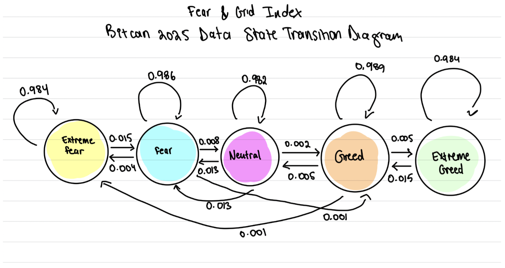

During Spring 2025 (sophomore year), I took MATH 242: Discrete Math and Proof. To wrap up the semester, we were allowed to do a research project on any course concept that interested us, and after a lot of brainstorming, my project partner and I decided to work on Markov chains.
Our main question: can Bitcoin's volatile, emotional swings be modeled as a discrete stochastic process, and if so, do the transition probabilities give us any actionable information? We built a 5-state Markov chain over the CNN Fear & Greed Index to find out, then wrapped it in a CLI tool for interactively comparing sentiment-based buy/sell strategies.
data and state definition
We used the Bitcoin Pulse hourly dataset from Kaggle, which pairs BTC/USDT prices with the Fear & Greed Index hour by hour. Filtering to 2023–2025 gave us just over 8,000 observations. We then discretized the index into five sentiment states:
pythondef label_state(index):
if index <= 25: return "Extreme Fear"
elif index <= 45: return "Fear"
elif index <= 60: return "Neutral"
elif index <= 75: return "Greed"
else: return "Extreme Greed"
We used the published Fear & Greed cutoffs rather than data-driven bins; this kept the states interpretable and comparable to how the index is actually reported in practice.
the transition matrix
We built the 5×5 transition matrix by counting hour-over-hour state changes and row-normalizing the counts:
| Ext. Fear | Fear | Neutral | Greed | Ext. Greed | |
|---|---|---|---|---|---|
| Extreme Fear | 0.985 | 0.015 | 0.000 | 0.000 | 0.000 |
| Fear | 0.004 | 0.987 | 0.008 | 0.001 | 0.000 |
| Neutral | 0.002 | 0.013 | 0.983 | 0.002 | 0.000 |
| Greed | 0.000 | 0.000 | 0.005 | 0.990 | 0.005 |
| Extreme Greed | 0.000 | 0.000 | 0.000 | 0.016 | 0.984 |

The first thing that jumped out was how diagonal-dominant this matrix is. Sentiment has a self-transition probability of roughly 98–99% at the hourly scale, which makes sense: sentiment is sticky on short timescales. But this has real implications for the modeling. Off-diagonal transitions are rare events, and any state more than one step away in the ordering is effectively unreachable in a single hop. The chain is also nearly band-diagonal, meaning sentiment tends to walk rather than jump.
strategy evaluation
The CLI enumerates all 25 buy/sell state pairs and scores each one using a return ratio computed from the state-conditional average prices:
mathReturn Ratio = (P̄_sell − P̄_buy) / P̄_buy
Two candidate strategies stood out:
Strategy B dominated on both raw return and consistency. Running the same pipeline across the data, its probability-weighted expected return remained positive while Strategy A's went slightly negative. Transitions out of Greed and Extreme Greed tended to produce negative return ratios across the board, which is consistent with the intuition that optimistic or greedy regimes are better to exit than to enter.
what the numbers actually mean
An important caveat: the return ratio compares time-averaged prices between two sentiment states; it is not the realized return of actually holding BTC through a transition. Because 2025 was a strong bull year (BTC appreciated roughly 51% across sentiment states), some of what shows up as "Strategy B return" is simply the price drift that happened to occur between the time windows when the market sat in Fear versus Greed.
Multiplying by the transition probability gives a more honest expected-value number, and those values are tiny: less than 0.1% per hourly transition, even for the best-performing pairs. So the tool we built is best read as a descriptive lens on where the market was priced in each sentiment regime, not as a tradeable backtest.
what i'd build next
- A realized-transition backtest with transaction costs and a buy-and-hold benchmark.
- Testing higher-order dependence. The Markov-1 assumption is convenient but testable; a second-order chain or a hidden Markov model over raw returns could capture regime structure that the discretized index misses.
- Out-of-sample validation across full market cycles (2022 bear, 2021 bull, 2020 pandemic) to see whether the Fear→Greed edge is structural or just an artifact of the specific regime we studied.
The full code and CLI are on GitHub.